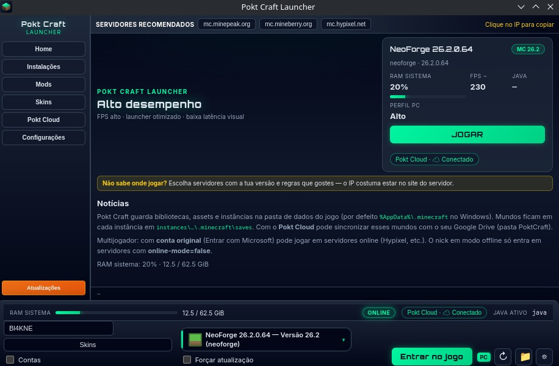

Launcher para Minecraft Java Edition
Pokt Craft — o launcher de Minecraft
Todas as versões oficiais, Forge, Fabric e NeoForge, mods, conta Microsoft e mundos no seu Google Drive com Pokt Cloud.
DownloadDisponível para Windows, Linux e macOS

Todas as versões oficiais: de Alpha aos snapshots
Instale qualquer versão do Minecraft Java a partir dos servidores dos desenvolvedores. Os ficheiros não são modificados — Vanilla limpa, quando você quiser, incluindo as builds mais recentes.
Forge, Fabric e NeoForge num clique
Loaders e instâncias isoladas sem caçar instaladores à mão. O launcher descarrega, valida e deixa o perfil pronto a jogar — inclusive NeoForge nas versões novas.
Mods e modpacks
Catálogo CurseForge e Modrinth no próprio launcher: pesquisa, instalação e progresso visíveis. Monta o teu pack sem misturar pastas à força.
Conta original ou modo offline
Entra com Microsoft (Minecraft original) ou usa um nick offline. Skins no launcher. O login Google do Pokt Cloud é outro fluxo — só para o Drive, se quiseres.
Pokt Cloud no teu Google Drive
Os mundos (saves/) sincronizam com a pasta PoktCraft/ na conta Google que
autorizares. Não passam por um servidor Pokt. Podes jogar offline se o Drive estiver indisponível.
Alto desempenho
RAM, Java e opções de vídeo ajustadas ao teu PC. O launcher mostra perfil, FPS estimado e estado do sistema para entrares no jogo sem configuração às cegas.
Download Pokt Craft
O Pokt Craft Launcher é o aplicativo desktop desta página. Corre em Windows, Linux e macOS.
Pokt Craft LauncherMinecraft é marca da Mojang AB / Microsoft. Google Drive é marca da Google LLC. O Pokt Craft Launcher não é afiliado, endossado ou patrocinado pela Mojang, Microsoft ou Google.